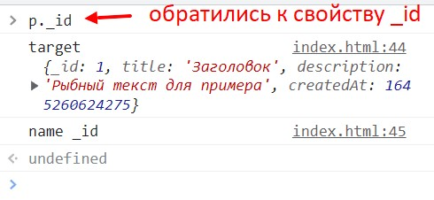
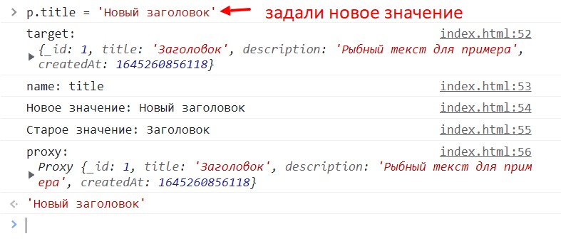

Proxy - это класс который позволяет гибко взаимодействовать с объектом.
Прокси принимает два аргумента:
Геттер будет запущен в случае вызова значения свойства прокси. Этот метод принимает три аргумента: текущий объект, название свойства к которому обратились и сам прокси
Сетер будет вызван в случае если мы попытаемся записать в свойство объекта какое либо значение. Геттер будет принимать четыре аргумента: текущий объект, название свойства к которому обратились, новое значение свойства и сам экземпляр прокси. Что бы внутри сетера получить старое значение свойства, мы просто обращаемся target[name] - сетер юудет вызван до перезаписи свойства
Запросим значение свойства
Зададим значение свойству
